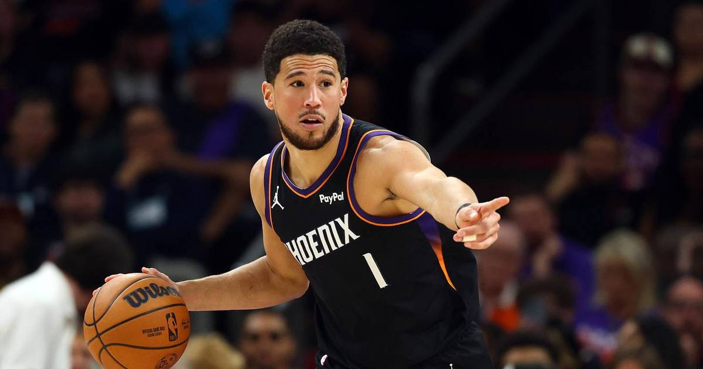

Booker's 43 Sets a Suns Home-Opener Record in 131-122 Win Over the Warriors
Devin Booker scored 43 points in Phoenix's 131-122 home-opening win over Golden State on Saturday, passing Charles Barkley's 37 for the most ever by a Sun in a home opener.

Disclosure: this post contains affiliate links. I earn a commission on qualifying purchases.
Devin Booker turned Phoenix's home opener into a record night. Booker scored 43 points as the Suns beat the short-handed Golden State Warriors 131-122 on Saturday night at Mortgage Matchup Center.
The record
Booker's 43 passed Charles Barkley for the Suns' home-opener scoring record. Barkley had held it with 37 points against the LA Clippers on Nov. 7, 1992.
Devin Booker: 43 points, 17-of-25 shooting, 7 rebounds, 7 assists
Final score: Suns 131, Warriors 122
Previous record: Charles Barkley, 37 (Nov. 7, 1992)
Booker scored 17 of his points in the third quarter, and Jordan Goodwin's buzzer-beater gave Phoenix a 102-92 lead entering the fourth. Luke Kennard's three stretched it to 117-102 with six minutes left, and the Suns never let Golden State all the way back.
The other side
The Warriors fell to 0-3 for the first time in 19 years, playing their third game in four days while resting several key players: Stephen Curry (right knee), Brandin Podziemski (low back), Draymond Green (low back) and Al Horford (low back). Rookie Yaxel Lendeborg led Golden State with a season-high 26 points and six three-pointers, and De'Anthony Melton added 25.
For Phoenix, Miles Bridges added 16 points and Dillon Brooks had 15 with five assists. The win moved the Suns to 1-1 after an embarrassing 124-83 season-opening loss at Portland.
Why it matters
Home-opener records don't happen by accident — Barkley's mark stood for nearly 34 years. Booker didn't just break it, he broke it by six, in a game Phoenix badly needed after getting blown out in its opener.
Gear up: Fanatics